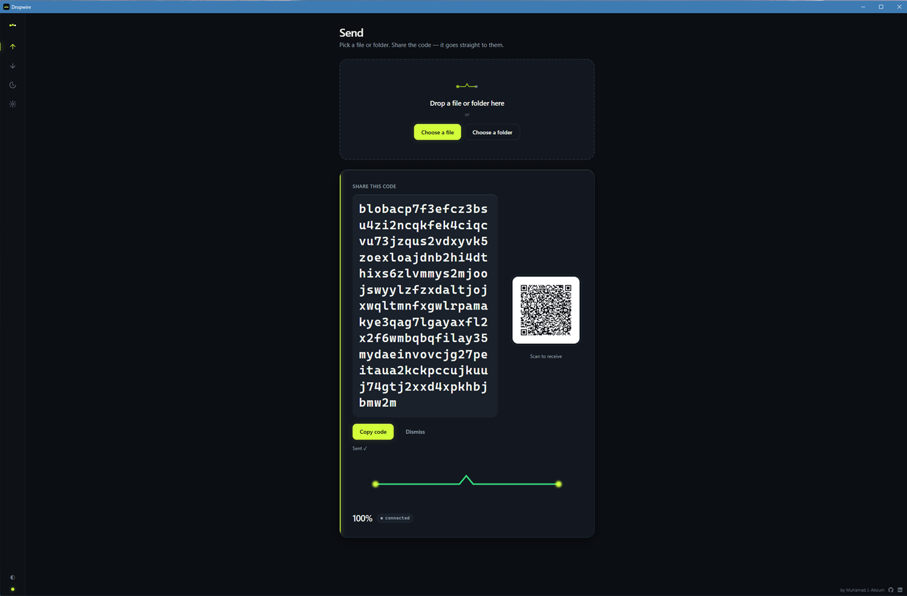
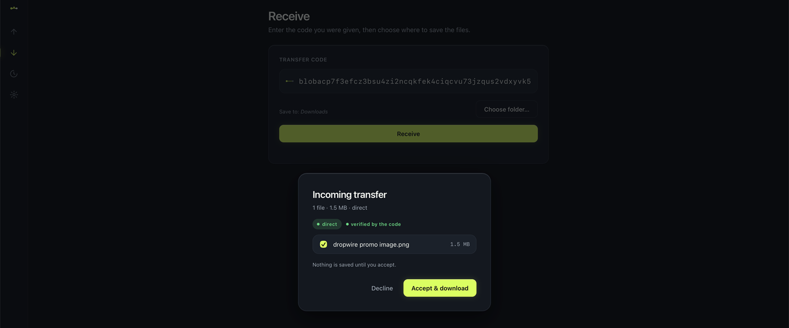
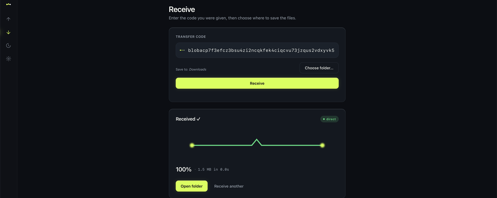
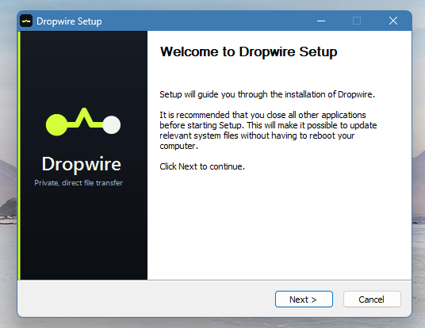
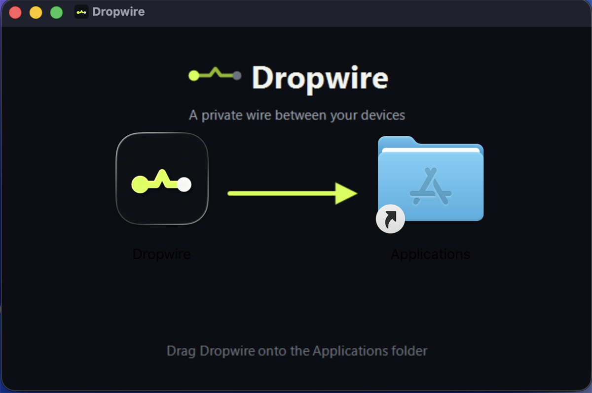

Free forever
No trial, no premium tier, no “upgrade to send big files.” Dropwire is free and open source, today and later.
Free & open source · No accounts · End-to-end encrypted
Dropwire is a free, private, peer-to-peer file transfer app. Your files travel directly from your device to theirs — encrypted end to end, with no account to create and no server holding your data. Think of it as AirDrop for Windows, Mac, and Linux — but it works across the internet, not just the same Wi-Fi.
Free forever — no trial, no paywall. Prebuilt apps for Windows, macOS & Linux are coming; build from source today.
Real screens from a file sent Windows ↔ Mac — nothing staged.

Drag in a file or a whole folder. Dropwire hands you a one-time transfer code and a matching QR — share it however you like.

Names, sizes, and count, verified by the code so the sender can’t fake them. Take only the files you want, or decline in one tap.

A live direct vs relayed badge shows how it’s travelling, and every byte is checked on arrival.


Linux ships as an AppImage, .deb, or .rpm.
Three steps. No sign-up, no upload to anyone’s cloud — peer-to-peer, encrypted end to end.
Drag it in or browse. Whole folders go as one resumable transfer — nothing is copied to a server first.
Dropwire gives you a one-time transfer code and a matching QR. Copy the code into any chat, or have them scan the QR — whichever is easier.
They enter the code, see exactly what’s being sent — names, sizes, count — and accept. Then it moves device to device, end-to-end encrypted, with a live progress bar.
Free, open-source, and truly private — no servers, no tracking, peer-to-peer by design.
No trial, no premium tier, no “upgrade to send big files.” Dropwire is free and open source, today and later.
Every transfer is end-to-end encrypted (QUIC / TLS 1.3). There’s no account to make and no profile to mine. The code is your key.
A code isn’t a public link. It’s served to the first device that connects — everyone after that is turned away. Your file goes to the person you meant, not whoever forwards the code.
The receiver previews exactly what’s coming — names, sizes, and count — and approves before a single byte downloads. Not what you expected? Decline in one tap — the sender is told right away. Both sides see when the other device connects, live.
Sending a folder? The receiver can untick anything they don’t need and download just the files they choose — the rest is never transferred.
Your bytes go straight from one device to the other. Devices find each other over the public Mainline DHT and n0’s free relay is only a fallback — there are no servers we run, and no middle server stores or sees your files in the clear.
Lost Wi-Fi mid-transfer? Reconnect and Dropwire picks up where it left off — it re-sends only the missing pieces, verified as it goes.
Send and receive several transfers at the same time. Each gets its own live card with its own progress, route badge, and controls.
Every line is public. Read it, audit it, build it yourself, or send a patch. No black boxes — trust by inspection.
Past transfers are listed only on your machine — never in any cloud. Resend a file in a click, or pick up an interrupted download right where it stopped.
Not a LAN-only tool. Send to someone in the next room or another continent — Dropwire connects across networks, no shared Wi-Fi needed.
The questions worth asking about anything that touches your files.
Yes — genuinely free, and open source. There’s no paid tier, no file-size paywall, and no ads. Because your files travel directly between devices, there’s no storage bill to pass on to you.
Transfers are end-to-end encrypted using QUIC over TLS 1.3. The connection is authenticated and encrypted between the two devices, so only the sender and receiver can read the contents. You don’t create an account, and there’s no profile or contact list to harvest. Treat the share code like a one-time key: it’s served to the first device that connects, and others are refused — so share it with the person you mean to.
Most transfers connect directly, device to device. When a network (some strict firewalls or mobile carriers) won’t allow that, Dropwire falls back to a free, shared relay from the open iroh network so the transfer still completes — we don’t run any servers ourselves. The relay only forwards already-encrypted data — it cannot read your files, and it doesn’t store them. You’ll see a clear “direct” or “relayed” badge so you always know how a transfer is travelling.
You won’t be left waiting. If the sender isn’t online or the code is no longer being shared, Dropwire tells you clearly instead of spinning forever — so you know to ask for a fresh code rather than wonder if it’s stuck.
No. There’s nothing to sign up for, no email, no password. Install Dropwire, pick a file, share the code. That’s the whole flow on both ends.
No. Dropwire doesn’t upload your files to a cloud or keep copies. The data moves directly from your device to the recipient’s. Even in the relay-fallback case, the relay only passes encrypted bytes through in transit — nothing is retained after the transfer finishes.
WeTransfer uploads your files to its servers during transfer and limits file size on the free tier. Dropwire sends files peer-to-peer, directly from your device to theirs — nothing is uploaded to anyone’s cloud, there’s no size limit, and it’s free and open source. WeTransfer is web-based; Dropwire is a desktop app for Windows, macOS, and Linux.
Yes — Dropwire. AirDrop is Apple-only and works on the local network. Tools like Snapdrop and LocalSend add Windows, Linux, and Android but stay LAN-only. Dropwire works across all those desktops and over the internet, so you can send to someone on a different network entirely — no shared Wi-Fi required.
Send Anywhere is free to use but closed-source and runs its own servers, with a paid tier for more. Dropwire is open source and peer-to-peer — we run no servers ourselves; the open iroh relay is only a fallback and can’t read your encrypted data. Dropwire is free forever, and you can audit or modify the code.
For Windows, macOS & Linux. Grab the latest build from GitHub, or build it from source — it’s quick.
Windows · macOS · Linux · Open source · No account
Building from source? The README walks you through it.